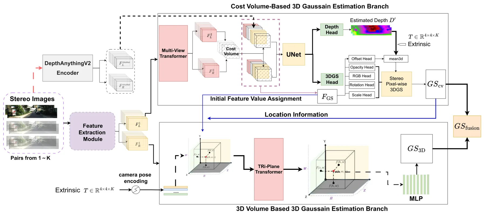
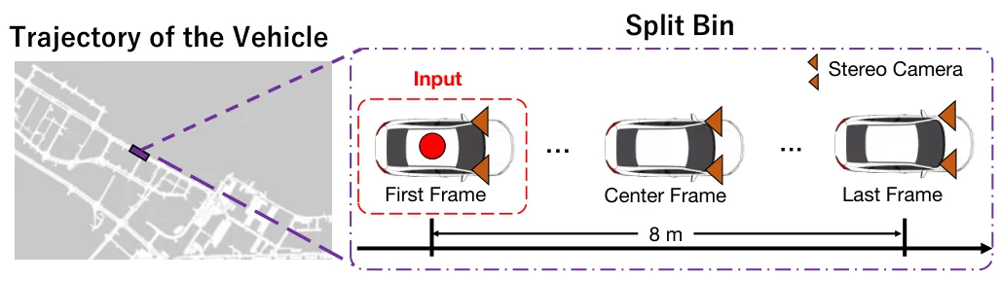
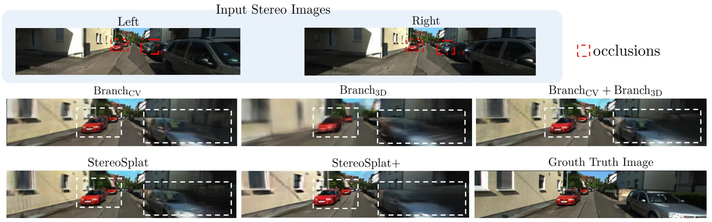
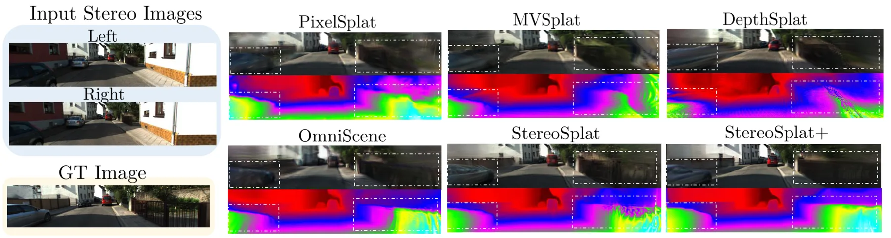
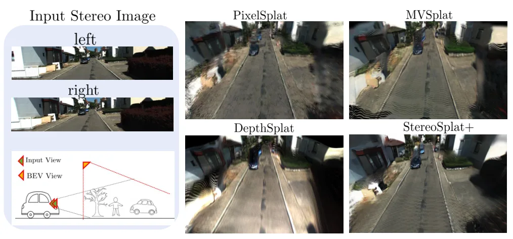
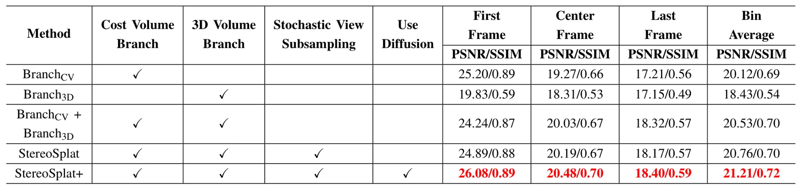
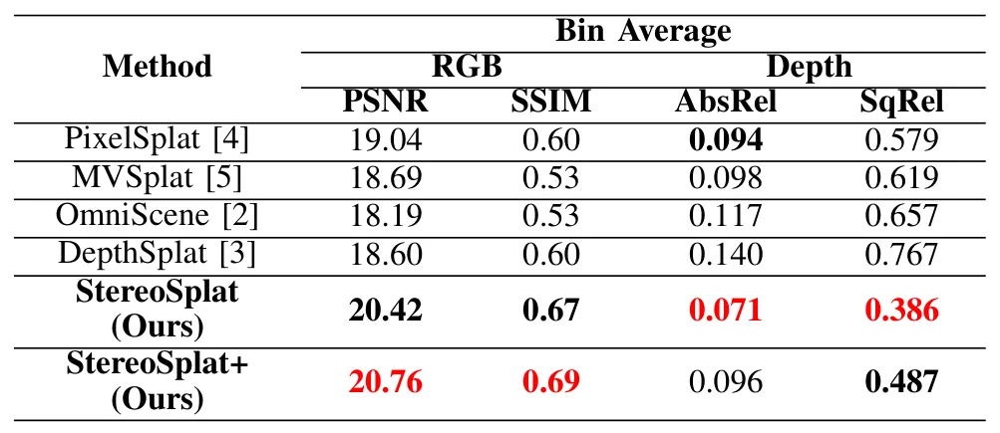

StereoSplat+：扩散辅助渐进推理的前馈双目高斯泼溅StereoSplat+: Feed-Forward Stereo Gaussian Splatting with Diffusion-Assisted Progressive Inference
面向机器人/AR 的因果双目重建限制，兼顾几何 cost volume 与生成先验；但扩散生成可能引入伪几何，且依赖输入位姿，距离完整 SLAM 尚有差距。
一句话工作总结
从一个双目对开始，用“渲染—扩散修复—回馈”循环扩展观测覆盖，提升遮挡区几何和外推视角质量。
摘要
StereoSplat+ 研究仅凭单次双目观测进行因果、render-ready 3DGS 重建。其基础模型 StereoSplat 可接收数量可变的带位姿双目对，通过 cost-volume 分支、triplane 3D volume 分支与连续位姿编码融合几何线索。单次双目推理时，系统先预测 3DGS，再渲染新双目视图，用一步 diffusion enhancer 修复后回馈模型，渐进更新 Gaussian 场景。KITTI-360 实验显示，该方法在遮挡区域和强视角外推下改善新视角渲染与几何精度，优于近期前馈 3DGS 基线。
Recent advances in 3D Gaussian Splatting (3DGS) have enabled high-quality, render-ready scene representations for novel-view synthesis. However, most existing 3DGS pipelines rely on multi-view observations (or non-causal access to future frames) to achieve sufficient coverage, which is often unavailable in on-device robotics and AR settings where sensing is restricted to a single stereo rig. Recovering a high-quality 3DGS scene from one stereo observation, therefore, remains challenging due to occlusions, limited field of view, and missing geometry. We present StereoSplat+, a diffusion-enhanced feed-forward framework that enables causal reconstruction from a single stereo pair. Our method builds on two key components. First, we propose StereoSplat, an input-invariant feed-forward 3D Gaussian estimator that takes a variable number of posed stereo pairs as input and predicts high-quality 3D Gaussians. StereoSplat fuses complementary geometry cues via a cost-volume branch and a triplane-based 3D volume branch and leverages continuous pose encoding to generalize across view counts and camera configurations. Second, since multiple posed stereo pairs are typically unavailable at inference time, we introduce a diffusion-enhanced one-shot progressive inference scheme called StereoSplat+: starting from one stereo pair, we render novel stereo views from the predicted 3DGS, refine them with a one-step diffusion enhancer, and feed them back as additional inputs to update the 3DGS. Experiments on the KITTI-360 dataset show that StereoSplat+ improves novel-view rendering quality and geometry accuracy, especially in occluded regions and under strong view extrapolation, outperforming recent feed-forward 3DGS baselines.
中文解读摘录
图表/页面预览

{kind=link}

{kind=link}

{kind=link}

{kind=link}

{kind=link}

{kind=link}

{kind=link}
